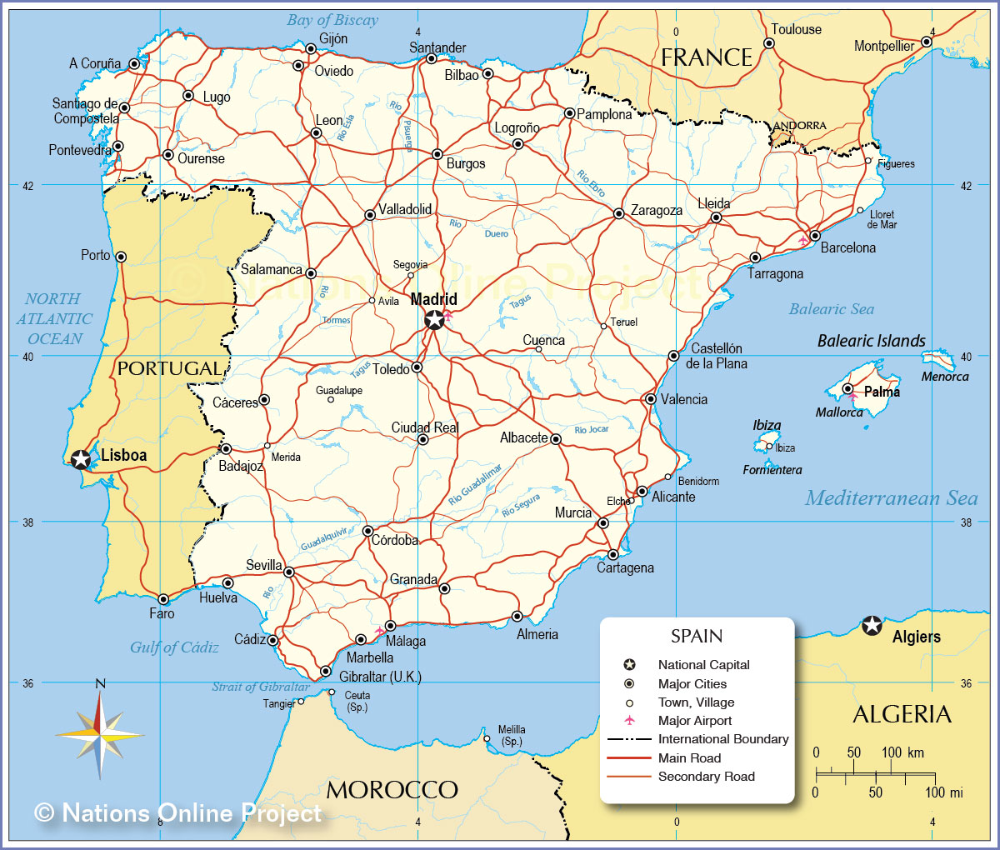

Spain trip: It was mainly for college students through a program called EF Tours. They try to give you a full flavor of a place. We had a tour guide for the whole country, & then individual tour guides for the big cities we were in. Traveled by bus for most of the trip, but also rode a train from Seville to Madrid. The main tour guide is native to the Basque region of Spain, trained as an archaeologist at Oxford, now does that and tours. We visited a silversmith, olive oil farm, the Prado art museum (holy fuck), Meditteranean Sea twice, Sagrada Familia, Seville Cathedral, Royal Chapel of Granada, Reina Sofia (a bunch of Picasso paintings), Santa Maria la Blanca (maybe the oldest synagogue in Europe, maintained by the Catholic church, built by Muslims in the style of a mosque).
Saw the tomb of Colombus and Isabel and Ferdinand. Lots of tapas, bars, restaurants. The coolest thing was the olive oil farm: they had us taste chocolate ice cream with an orange/vanilla infused olive oil. Easily in the top 5 food experiences of my life.
Most impressive thing was the Prado and seeing The Garden of Earthly Delights. Walked at random, all of a sudden I'm in the room with it. The place is so filled with great works that you can't help but be gobsmacked. The next night I went back, stared at it for about 30 minutes with some friends as we kept asking questions about it. The best thing about the trip, though, was meeting the other group. None of us knew everyone going into it, few of us knew more than a handful of people, but everybody was just so welcoming. Talked a lot about differences between California and Missouri. Pretty fascinating. Kind of like my experience student-teaching on the military base in Germany: realizing that there's more culture shock in going from civilian life to military life than there was American life to German life. Same thing with Spain: more culture shock talking about the differences between California and Missouri than living the differences between America and Spain. Loved it. 